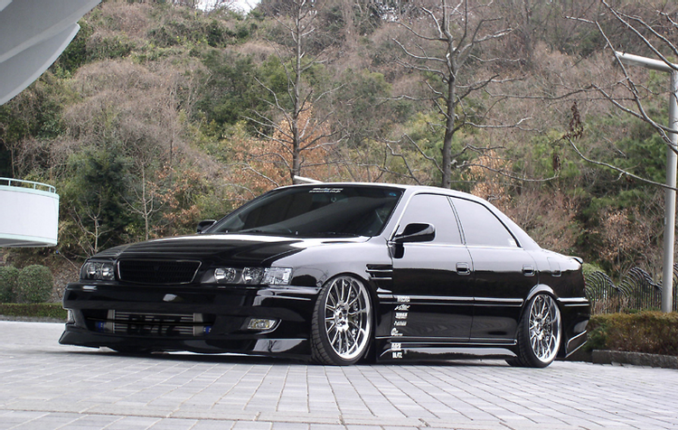

Mul pole õrna aimugi, mida siia võiks kirjutada ... Olgu. Mis on JDM ? JDM ehk Jaapani Domestiiline turg, sealt ostetakse enamasti sport autosi või driftimis autosi ja need on ülimalt kuumad. Lisan ka paar pilti oma lemmikutest. Igatahes, need on põhimõtteliselt illegaalsed autod. Aga ma ei tea, mis seisus on Eesti, kas neid saab importida või ei saa. Igatahes USAs oli mingi hetk, kus keelati nende import ära. Aga see toodi tagasi ja kehtestati piirangud ning ka vanuse piirang (suht imelik, miks just 25a peab olema, et seda importida). Pole just kõige suurem auto fanaatik aga just JDMi autode suhtes olen üsna suur fänn.
| Auto nimi | Pilt | Hotness rating |
|---|---|---|
| FD3S Mazda RX-7 | 8/10 | |
| Subaru Impreza WRX STI | 7/10 | |
| Toyota Chaser JZX100 |  | 9.5/10 <3 |